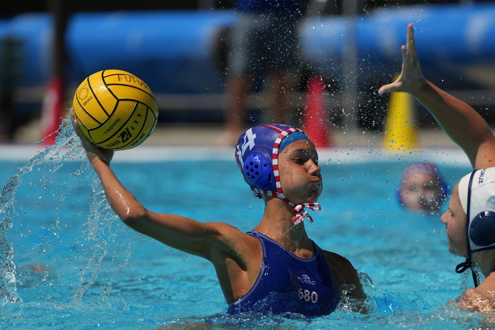

National directory
Youth water polo, connected
Rankings, results, teams, and clubs—all in one place.
Search post-Junior Olympics rankings, follow tournament journeys, and open the team and club profiles behind every finish.

Current order
Explore rankings
Completed tournament
2026 Junior Olympics results
Choose an age group to preview division and subdivision finishes. This module can rotate to the next completed tournament as new results are added.
Loading completed results…
Program directory
Explore clubs
Open a club profile or choose a region to filter the full club directory.
All clubs